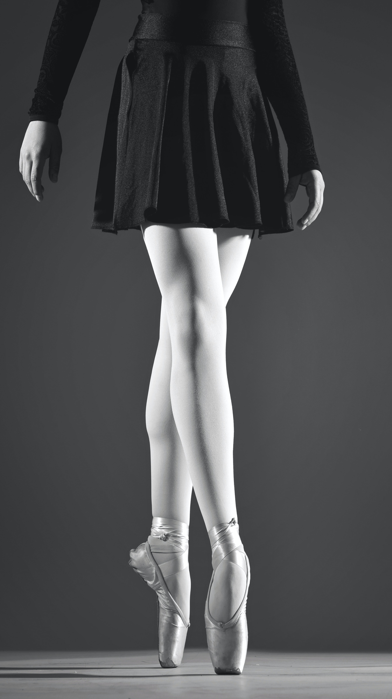
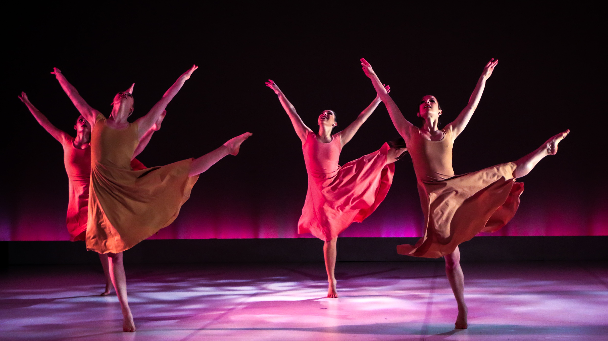
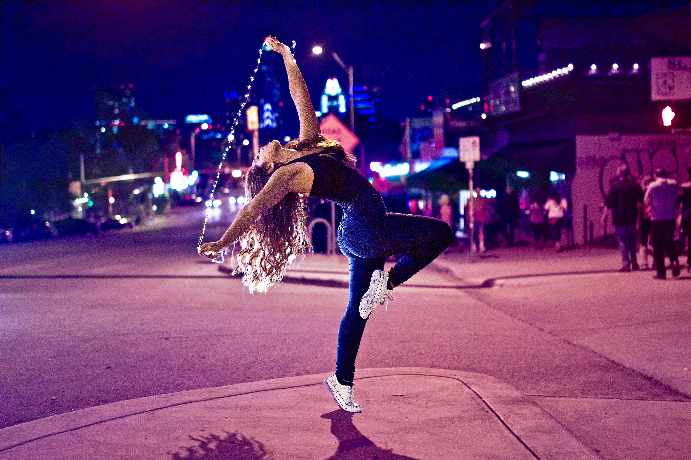
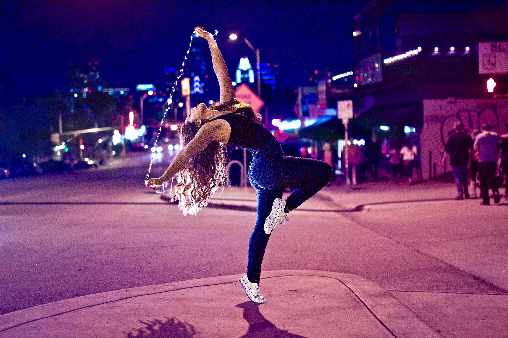

Dancing
My favorite hobby
  


Dance is a performing art form consisting of sequences of movement, either improvised or purposefully selected. This movement has aesthetic and often symbolic value.[nb 1] Dance can be categorized and described by its choreography, by its repertoire of movements, or by its historical period or place of origin.